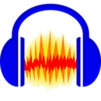
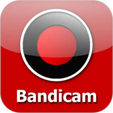

Free Software
Home
Software
Editing
Office
Recording
Aplikasi Recording Audio/Visual
Adobe Audition Adobe Audition adalah multitrack digital audio recording, editor dan mixer yang udah digunakan dan memiliki berbagai fasilitas pengolahan suara. Dengan Adobe udition Anda dapat merekam suara, memperbaiki kualitas suara, menambahkan berbagai efek suara, dan menggabungkan dengan berbagai track suara menjadi satu track, dan menyimpannya dalam berbagai format.

Audacity Audacity adalah software opensource untuk merekam materi audio, mengeditnya serta menyatukannya melalui proses mixing sehingga menjadi sebuah karya audio yang utuh. Definisi 'free' yang dibawa oleh software ini tidak terbatas hanya bebas dari segi harga (free = gratis) tetapi lebih jauh lagi bebas yang dimaksud adalah kebebasan dalam mengungkapkan pemikiran dan ekspresi (free = freedom = kemerdekaan).

Bandicam Bandicam adalah program perekam paling ringan untuk Windows yang bisa merekam apa pun di layar PC-mu dengan kualitas tinggi. Serta bisa merekam di area tertentu di layar PC-mu, atau menangkap gambar yang memakai teknologi DirectX/OpenGL/Vulkan. Bandicam membantumu merekam gim dengan kompresi tertinggi, serta menjaga kualitas video semirip dengan aslinya, dan memberi performa lebih tinggi dari program lain yang memiliki fitur yang sama.
Open Broadcaster Software(OBS) Open Broadcaster Software (OBS) adalah software gratis yang berguna untuk recording dan live video streaming. Untuk live streaming, OBS bekerja sebagai encoder menggunakan protokol RTMP. Kompatibel dengan berbagai jenis server streaming misalnya Wowza Media Server. Dalam tutorial ini kita akan mempelajari setting live video streaming dengan OBS classic.